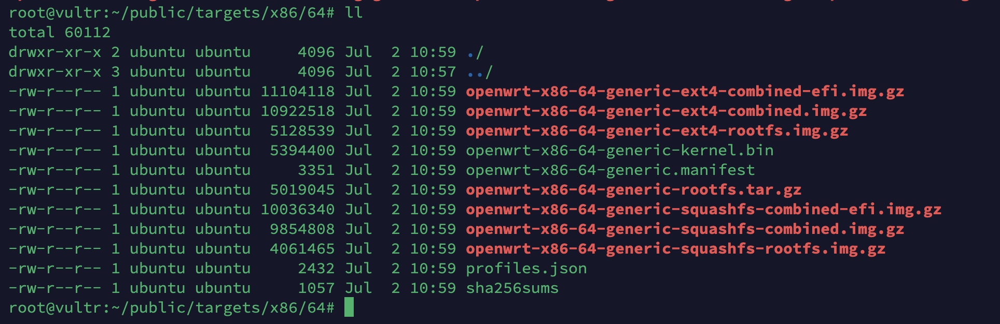

拉取
1
docker pull openwrtorg/imagebuilder
或
1
docker pull openwrtorg/imagebuilder:x86_64-22.03-SNAPSHOT
给bin目录赋予权限，不然在Docker容器里面会提示没有权限，容器里面make的时候不能用sudo权限，不然也会编译错误。
1
2mkdir public
chown -R 1000:1000 public进入Docker容器
1
sudo docker run --rm -v "$(pwd)"/public/:/home/build/openwrt/bin -it openwrtorg/imagebuilder
或
1
sudo docker run --rm -v "$(pwd)"/public/:/home/build/openwrt/bin -it openwrtorg/imagebuilder:x86_64-22.03-SNAPSHOT
开始编译
1
make image
编译完成

Docker容器编译原版OpenWrt固件
相关文章
-------------本文结束-------------